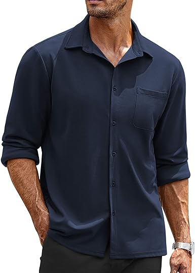
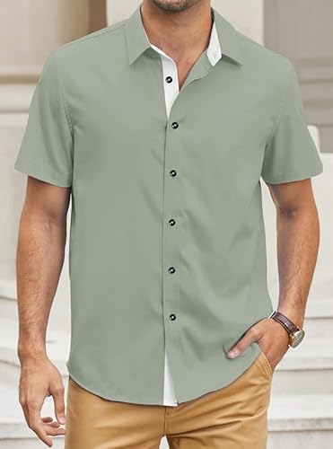
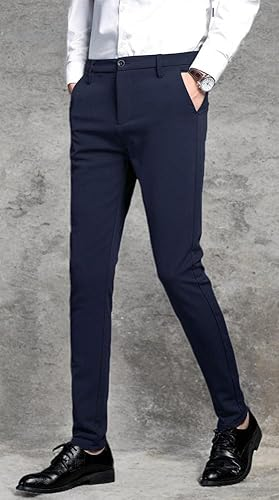
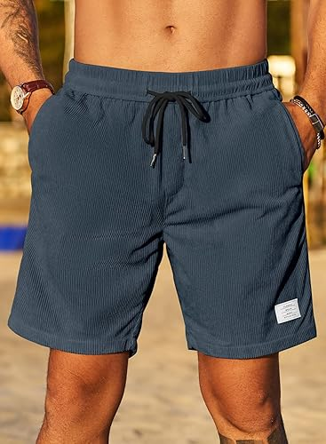

<INPUT TYPE=SUBMIT VALUE="Añadir producto al carrito" ></center>


<html>
<HEAD>
<Title>Ropa para hombre</tiTle>
<!autor: Damaris Menjivar>
</head>
<body BGCOLOR="green">
<center><h1>Ropa para hombre</h1></center>
<HR WIDTH=70% SIZE=10% COLOR="blue">
<FONT SIZE=7 COLOR=black>
<center><UL TYPE="SQUARE"></center>
<Center><LH>Camisa de vestir casual de manga larga.</LH></font></center>
<font size=5 color=white>
<Center></center>
<center><Li> Material: de algodón, tela cómoda y suave.</center>
<center><Li> Cuello en V, manga larga,casual.</center>
<center><Li> Color azul oscuro.</center>
<center><Li> US $24.99</center>
<center><Li>Instrucciones de cuidado del material: Lavar en lavadora.</center>
<center><INPUT TYPE=CHECKBOX NAME= variable> Opción<br><br></center>
<center><INPUT TYPE=RADIO NAME= variable VALUE=Talla S >Talla S<BR></center>
<center><INPUT TYPE=RADIO NAME= variable VALUE=Talla M >Talla M<BR></center>
<center><INPUT TYPE=RADIO NAME= variable VALUE=Talla N >Talla N<BR></center>
<center><INPUT TYPE=RADIO NAME= variable VALUE=Talla XL>Talla L<BR></center>
</UL></font>
</BODY>
</HTML>


<FONT SIZE=7 COLOR=black>
<UL TYPE="Square">
<HR WIDTH=70% SIZE=10% COLOR="blue">
<Center><LH>Camisa casual de manga corta.</LH></font></center>
<font size=5 color=white>
<center></center>
<Li>Tela de satén: Están hechas de 75% poliéster y 5% elastano. 
<Li>Hechas de tela suave, ligera y transpirable, estas camisas proporcionan un aspecto sin arrugas.
<Li> Color verde claro.
<Li> US $27.99
<Li>Instrucciones de cuidado del material: Lavar a máquina.
<br><INPUT TYPE=CHECKBOX NAME= variable> Opción<br><br></center>
<INPUT TYPE=RADIO NAME= variable VALUE=Talla S >Talla S<BR>
<INPUT TYPE=RADIO NAME= variable VALUE=Talla M >Talla M<BR>
<INPUT TYPE=RADIO NAME= variable VALUE=Talla N >Talla N<BR>
<INPUT TYPE=RADIO NAME= variable VALUE=Talla XL>Talla L<BR>
</UL></font>
</BODY>
</HTML>


<DL>
<FONT SIZE=7 COLOR=black>
<HR WIDTH=70% SIZE=10% COLOR="blue">
<center><LH>Pantalon de vestir ajustado</LH></center>
<font size=5 color=black>
<center></center>
<DT>Tipo de tela:
<font color=white>
<DD>Dacrón textil suave, liso y liviano.</font>
<DT>Estilo:
<font color=white>
<DD> Pantalón de vestir, completo con una cremallera y cierre de botón, bolsillo inclinado y bolsillos traseros.</font>
<DT>Color:
<font color=white>
<DD>Azul marino.</font>
<DT>Talla:
<font color=white>
<dd>13 a la 42</font>
<DT>US:
<font color=white>
<dd>$23.99</font>
<DT>Instrucciones de cuidado del material:
<font color=white>
<dd>Lavar a máquina.</font>
</DL>
</BODY>
</HTML>


<FONT SIZE=7 COLOR=black>
<center><UL TYPE="square"></center>
<HR WIDTH=70% SIZE=10% COLOR="blue">
<Center><LH>Short corto de playa de verano.</LH></font></center>
<font size=5 color=white>
<Center></center>
<center><Li> Tipo de tela: hechos de 100% poliéster para una sensación ligera y transpirable.</center>
<center><Li> Ideal para los días calurosos de verano, ya sea para relajarse en casa o para salidas a la playa o golf.</center>
<center><Li> Color azul marino.</center>
<center><Li> US $16.09</center>
<center><Li>Instrucciones de cuidado del material: Lavar a máquina o a mano, no se encoge después del lavado.</center>
<center><INPUT TYPE=CHECKBOX NAME= variable> Opción<br><br></center>
<center><INPUT TYPE=RADIO NAME= variable VALUE=Talla S >Talla S<BR></center>
<center><INPUT TYPE=RADIO NAME= variable VALUE=Talla M >Talla M<BR></center>
<center><INPUT TYPE=RADIO NAME= variable VALUE=Talla N >Talla N<BR></center>
<center><INPUT TYPE=RADIO NAME= variable VALUE=Talla XL>Talla L<BR></center>
</UL></font>
</BODY>
</HTML>


<center><A HREF="Parcial.html">REGRESO AL INICIO</A></center>
